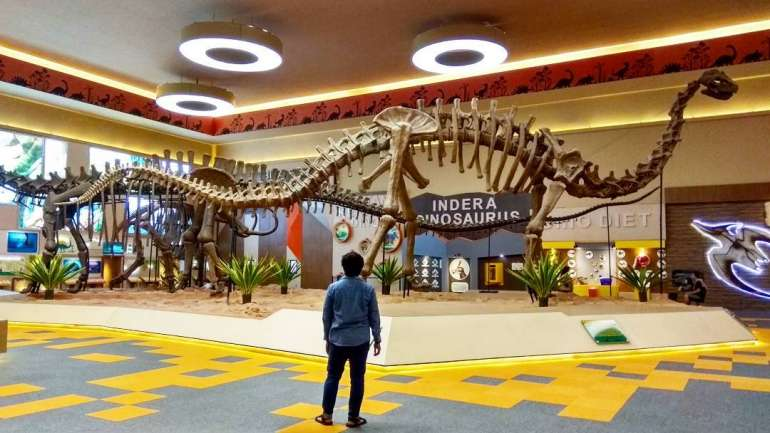

5 Wisata Malang Raya yang Bisa Dikunjungi Saat Musim Hujan!
By : Admin
Tanggal : 2-Januari-2019
Setelah disibukkan dengan berbagai macam aktivitas sehari-hari, akhir pekan adalah waktu yang tepat untuk
berlibur bersama keluarga tercinta ya bunda. Akan tetapi musim hujan terkadang menjadi kendala dan penghalang
liburan bersama keluarga yang telah direncanakan. Jika bunda dan keluarga telah merencanakan liburan di akhir
pekan ini ke kota Malang, dan bingung ingin berkunjung ke destinasi wisata mana, berikut ini Lapis Malang punya
rekomendasi 5 Wisata Malang Raya yang bisa bunda kunjungi saat musim hujan bersama keluarga.
Museum Malang Tempo Doloe
Rekomendasi pertama Wisata Malang Raya yang bisa dikunjungi saat musim hujan adalah Museum Malang Tempoe Doloe.
Museum Malang tempo Doloe terletak di Tumpang, Kabupaten Malang, tepatnya di sekitar pasar sayur. Seperti namanya,
saat bunda berkunjung ke museum ini, bunda dan kelaurga bisa memperoleh berbagai macam pengetahuan tentang kota Malang,
sejak zaman penjajahan sampai kemerdekaan diraih. Koleksi yang terdapat di Museum Malang Tempo Doloe cukup banyak loh bunda,
diantaranya buku-buku kuno, fosil, arca, benda-benda zaman purbakala, dan sebagainya. HTM yang dikenakan juga cukup terjangkau
untuk setiap kalangan loh bunda, yaitu Rp 25.000 untuk wisatawan luar Malang, Rp 15.000 untuk warga Malang, dan Rp 10.000 untuk
pelajar.
Malang Snow City
Malang Snow City adalah satu-satunya wisata wahana salju di Malang Raya. Masih satu lokasi dengan Hawai Waterpark,
tempat wisata indoor ini beralamat di Perumahan Graha Kencana, Jl. Raya Karanglo, Banjararum, Singosari. Selama berada
di Malang Snow City, bunda dan keluarga tidak hanya bisa bermain saja loh bun. Tapi juga bisa emcoba berbagai wahana,
seperti Flying Car, Twsiter Robotic, Soccer Target, menonton Live Music dan Family Show. Untuk biaya tiket masuknya, para
pengunjung dikenakan biaya sebesar Rp 60.000 per orang.
Museum D'Topeng Kingdom
Museum ini terkenal di kalanagan wisatawan yang berkunjung ke kota Batu. Seperti namanya, di museum D'Topeng
Kingdom terdapat kurang lebih 2.000 topeng yang berasal dari peeninggalan-peninggalan kerajaan Indonesia zaman dahulu.
Saat bunda berkunjung kesini, bunda cukup mengeluarkan biaya sebesar Rp 25.000 pada hari senin sampai kamis, dan untuk
hari weekend ,jum'at sampai minggu di kenakan Rp 30.000. Dengan jam buka dari jam12.00 sampai 20.00 WIB. Museum D'Topeng
Kingdom berada di kawasan Museum Angkut di Jl. Abdul Ghani dan sudah mulai dibuka untuk umum sejak tanggal 23 Mei 2014 lalu.
Museum Angkut
Berlokasi di Jl. Terusan Sultan Agung Atas No. 2 Batu, museum ini terkenal dengan wisata ala keliling dunia. Bagaimana tidak
bunda, terdapat 10 zona yang bisa bunda dan keluarga jelajahi saat berkunjung ke wisata ini. Misalnya,
zona edukasi, Italia, Inggris, Perancis, Las Vegas, Jerman, Hollywood, Jepang, Gangster, Broadway dan juga Batavia.
Setiap zona dibuat mirip dengan aslinya loh bunda. Wah pasti bisa seru-seruan bareng keluarga sambil berfoto-foto ria
disana ya bun. Selain 10 zona, disini juga terdapat aneka macam motor dan mobil klasik yang bisa memanjakan mata. Harga
tiketnya sendiri yaitu Rp 70.000 untuk Senin - Kamis, dan Rp 100.000 untuk Jum'at - Minggu.
Jawa Timur Park 3
Seperinya kalau membahas wisata di Batu memang tidak ada habisnya ya bunda. Rekomendasi wisata indoor berikutnya dari
kami adalah Jatim Park 3 yang sedang ramai diperbincangkan. Wisata Malang Raya yang terbilang baru ini berlokasi di Jl.
Soekarno, Kecamatan Beji, Batu. Sepertinya tempat wisata ini bisa menjadi tempat wisata favorit bunda dan keluarga. Banyak
sekali zona yang terdapat di Jawa Timur Park 3, yaitu Dino Park yang menawarkan sensasi bertemu dengan makhluk-makhluk purbakala,
Ice Age, Infinite World, The House of Zombie, The Legend Star yang berisi patung-patung lilin bintang-bintang legenda dunia.
Selain itu ada zona Jepang, India, Amsterdam, Diagon Alley Harry Potter, Kerajaan Majapahit. Replika Istana Negara, Fun Tech
Plaza dan Galeri Musik Dunia.
Nah demikian bunda beberapa rekomendasi wisata Malang Raya yang masih bisa dikunjungi saat musim hujan. Semoga bisa bermanfaat
untuk bunda dan keluarga ya. Oh ya, satu lagi, supaya liburannya semakin berkesan, jangan lupa membawa camilan lezat yang cocok
untuk keluarga. Yap, bunda bisa membawa Lapis Malang yang praktis saat liburan.